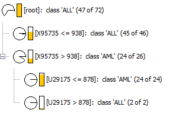

How Genes Cause Types of Leukemia
The purpose of this data mining project was to see if there was a link between certain values of genes and different types of Leukemia. From the dataset provided a link between genes was found.
About the Dataset
The dataset consists of 72 entries with each entry representing a patient. It comes from a set of 7,000 entries and has been pruned for this specific task. The information given includes Type of Leukemia (only 2 types given ALL or AML), year sample was taken, gender, Treatment response, Source, Genes and a few others. The source was
http://www.kdnuggets.com/data_mining_course/assignments/assignment-5.html
The knime layout
The knime Layout is shown below. There are two CSV files where the first one on the left is just the dataset as given and the one on the right was modified so that it only included the type and genes.
Correlation
The first step I did to help me visualize the data was to make correlation Matrices. I was curious if there were any obvious relations between the different data such as males getting cured more than females, or more males with a certain type, etc. The matrix that was formed was as follows:
After looking at it I thought there was a strong correlation between the treatment response, and Class (type of Leukemia) as well as the treatment response and the source (Hospital). But then I found that the source and class were related so I came to the conclusion that there could be a correlation between one of the two but you couldn't verify it because the one hospital was treeting mostly one type of Leukemia.
Then I decided to look at how the genes were correlated. It produced a pretty cool visualization as shown below:
The Decision Trees
After looking at the data it was clear that a decision tree would be the best bet for this. Because the goal was to determine if a specific genes would cause a type of Leukemia the other classifiers such as clustering wouldn't work as well. The initial decision tree is below:
As you can see it was not too helpful. I was unable to parse out the extraneous info from the CSV and only have the decision tree use part of the input. In the end I just modified the file so that all it had was the type of Leukemia and the gene numbers. This proved much more useful as you can tell from the decision tree that was generated from that:

Interesting Results
Just for fun I was playing around with KNIME and decided to do a K-Means clustering on the second input. Interestingly it found 3 clusters that appear to be somewhat similar to the decision tree but not exactly.
Future Work
The future work would be related to going through a larger set of data and genes to try and find more correlations between the two. Exploring more of what the K-Means found to see if there were other similarities in the type/treatment of the Leukemia for people found in those clusters.